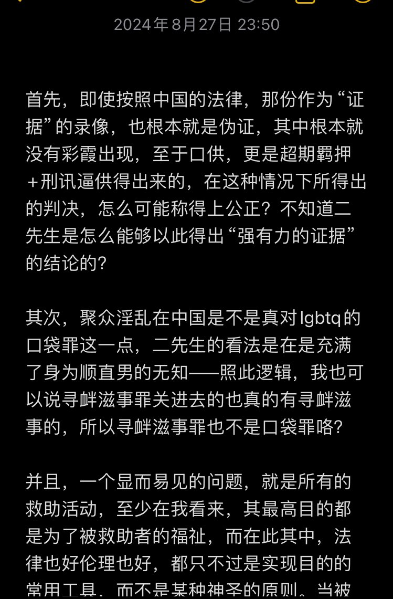
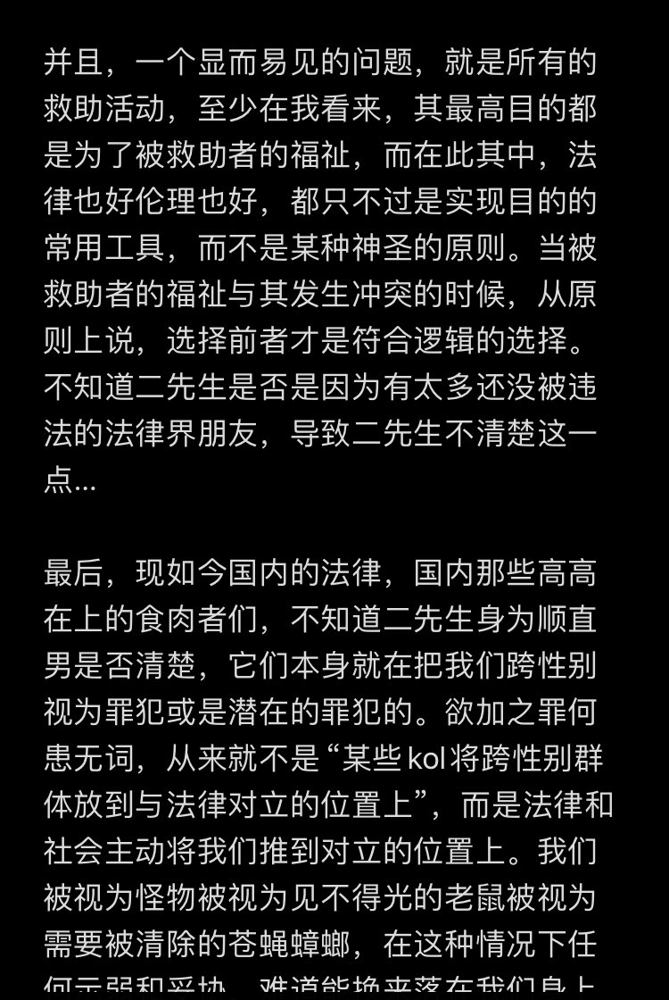
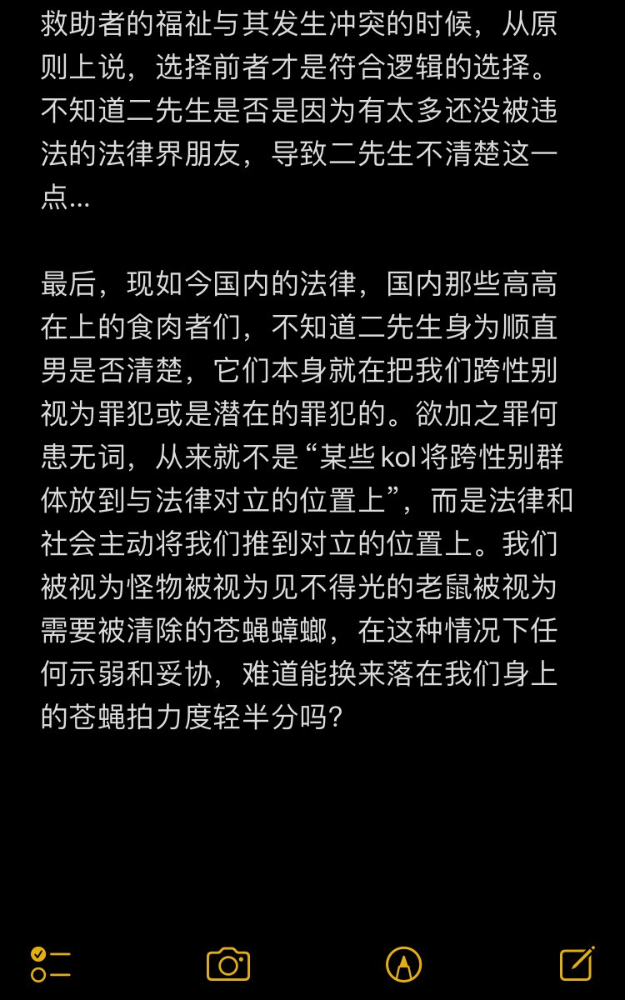

北雁冬翼（simone luxem）🏳️⚧️🏳️🌈🔬
@Simone_Luxem
针对二先生对彩霞案的回复
此外，本人因为自身精神状态原因，不再担任亚明案负责人，同时无限期暂停所有公开对外主动交流，在此期间所有信息交换全部随缘，请不要抱有任何期待



小二
@keyemail
这里面有两个很核心的事实问题，让这篇文章是一个宣传品，甚至是一个煽动墙内人员犯罪的作品。
1.救助行为本身，并不是你自己免除犯罪行为的护身符。 《中华人民共和国刑法》第三百零一条规定，聚众进行淫乱活动的，对首要分子或者多次参加的，处五年以下有期徒刑、拘役或者管制。… https://t.co/z1yfoKvDlQ